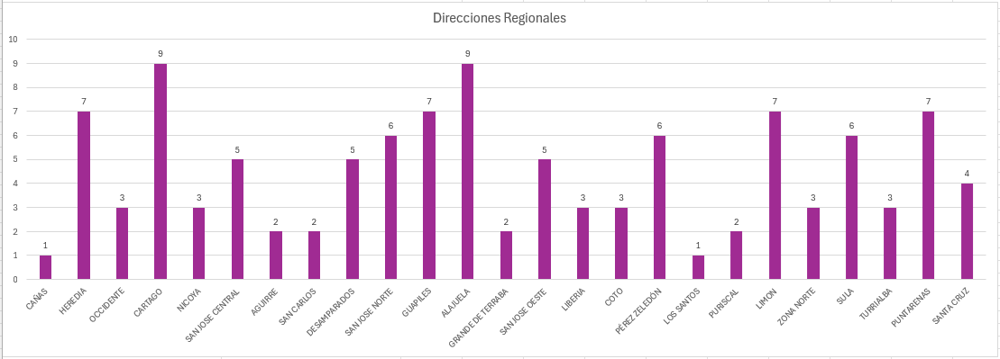
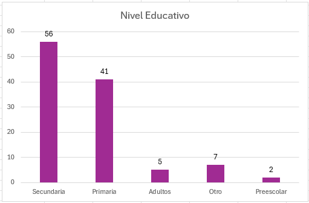
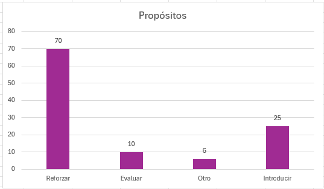
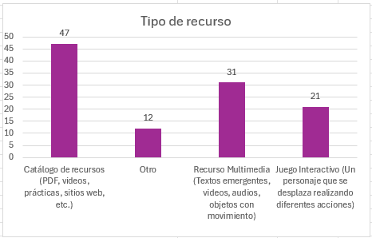
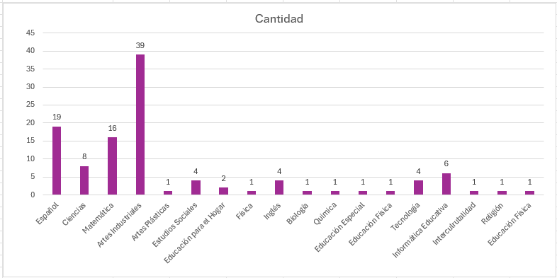

Encuesta Educ@tico
Instrumento que se encuentra en el sitio de educatico, con el objetivo de recoger insumos sobre la necesidad de recursos educativos que apoyen las diferentes temáticas curriculares.
Enlace: https://www.encuesta.mep.go.cr/index.php/681422?lang=es
Fecha de corte: Desde marzo 2024 a abril 2025
Total de respuestas recibidas: 111
Gráficos y tablas
Tabla#1: Detalle de la participación de 111 opiniones enviadas por las 27 Direcciones Regionales.

Gráfico #2: Distribución de las 111 participaciones según el nivel de recursos que se solicitan.

Gráfico #3: Distribución de las 111 solicitudes y el propósito de recursos que requieren.

Gráfico #4: Distribución de las 111 opiniones y el tipo de recurso que más requieren.

Tabla#5: Distribución de las 111 opiniones establecido por asignatura y por nivel.

A continuación en el menú del sitio se muestra el detalle por asignatura de las opiniones de los usuarios que completaron la encuesta.